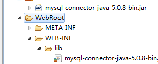
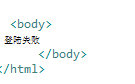
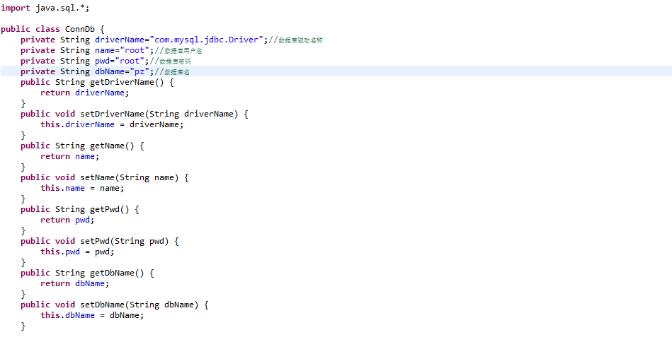
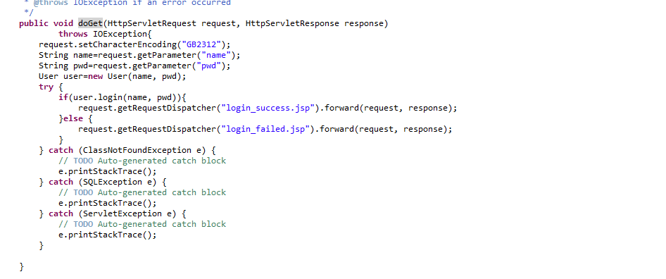

jsp+servlet+javabean简单登录功能
大家好，我是mythSun。
很高兴能在这里和大家分享，做一个jsp+servlet+javabean简单登录功能。
话不多说，直接开始。
创建一个叫做pz 的数据库
里面有一个user表，字段id、uname、upwd，类型依次为int、varchar、varchar，大小自己看着设置就行。
开发环境myeclipse
正文开始：
第一步：
新建一个web项目
File---new—web project
输入你的项目名称
第二步：
导入jar包，因为要连接数据库，所以导入“mysql-connector-java-5.0.8-bin.jar”这个jar包
导入方法：网上下载好该jar后，右击复制，然后找到项目WebRoot—WEB-INF—lib，右键粘贴，你会看到jar复制进来了，然后右击该jar，点击Build path—add Build path即可。
导入成功示意图

第三步：
在WebRoot下新建三个jsp文件，分别是login.jsp login_success.jsp login_failed.jsp
下面是他们依次的代码
login.jsp：

login_success.jsp
Login_failed.jsp

第四步：
写数据库连接类ConnDb.java这个javabean，该文件建在src下即可（就是简易demo，就不分包了）
代码如下


这个是简单连接数据库的工具类，如果数据库连接比较精通的，可以忽略我这个
第五步：
书写业务类User.java这个javabean


同样，很懂数据库连接的操作的，这一步也可以替换成自己的
第六步：
书写login.java这个servlet
直接上代码（这个是servlet因为继承了HttpServlet）



解释一下：
这个可能出错，因为没有设置中文乱码解决办法，前台最好测试数字的姓名和密码，至于完善，交给看官您了。
User user=new User(name, pwd);这个就是初始化刚刚的javabean

这个是判断是否登录
登陆成功转给login_success.jsp这个文件，失败同理。
第七步：
服务器运行该项目，测试


成功！